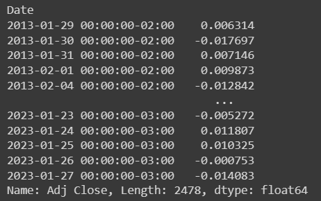
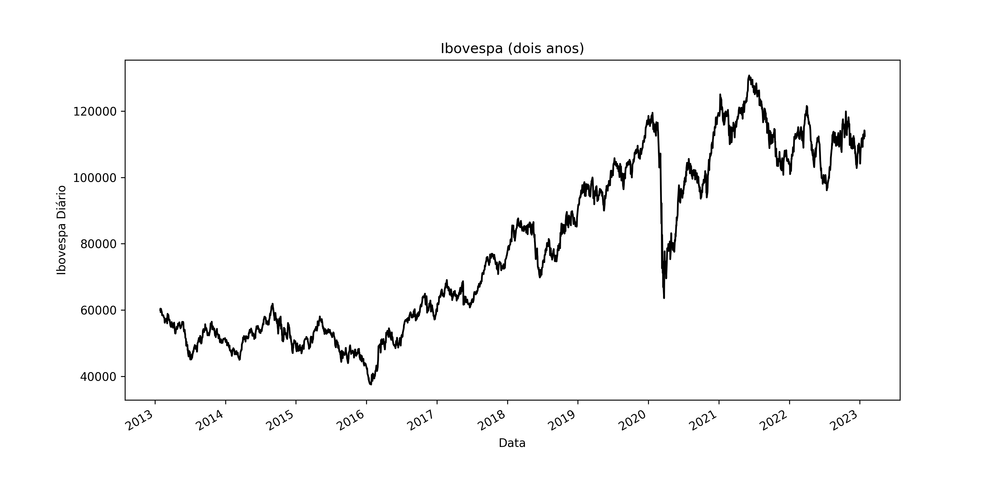
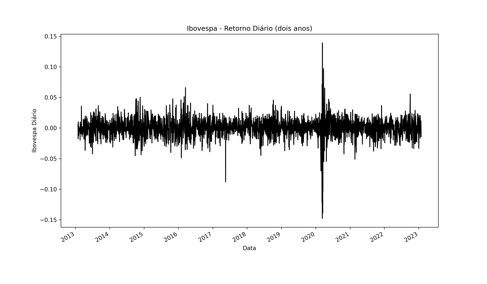
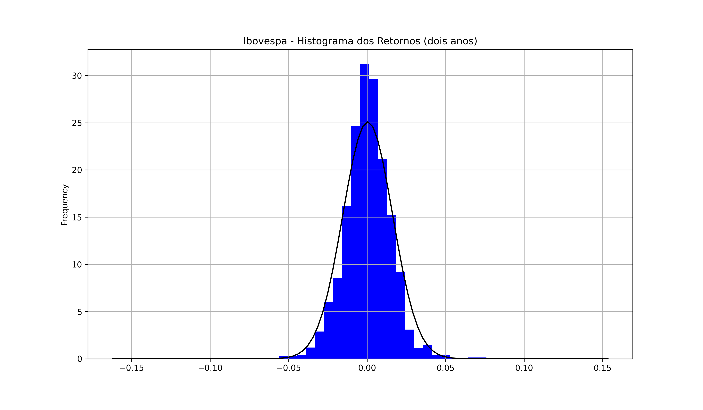
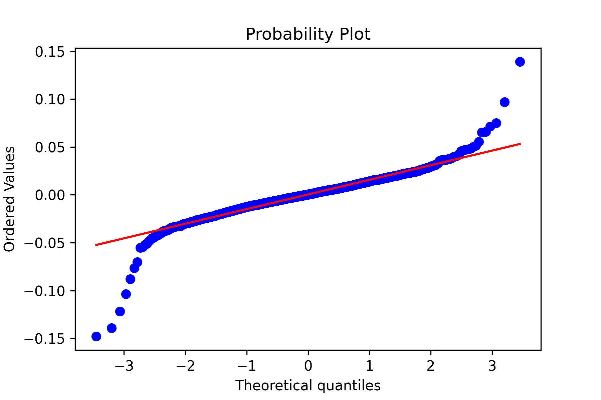

Analisando Estatísticas do Ibovespa com Python
Introdução
Neste post, vamos explorar como usar o Python para obter estatísticas sobre o Índice Bovespa (Ibovespa). Nós veremos como usar os dados históricos do Ibovespa para criar gráficos e calcular métricas como retorno.
O objetivo é analisar o comportamento e a volatilidade do Ibovespa, observando seus retornos. Se os retornos diários para esse período se comportarem como uma distribuição normal ou gaussiana, estudos de riscos e probabilidades podem ser realizados adotando a hipótese da normalidade.
Obtendo Dados do Ibovespa
A primeira etapa é obter os dados históricos do Ibovespa. Esses dados podem ser baixados do site da B3 | Bovespa, mas nesse caso vamos fazer o download do Yahoo! Finance, através da biblioteca python yfinance.
Como sempre gosto de fazer, vou utilizar o Google Colab para fazer o código.
# Instalção e importação do yfinance
!pip install yfinance -q
import yfinance as yf# Para plotagem dos gráficos
import matplotlib.pyplot as plt
# Para as estatísticas
import statistics as st
import numpy as np
import scipy.stats as sci
from scipy.stats import normCálculo dos Retornos
Os dados de fechamento diário do Ibovespa foram adquiridos dos últimos 10 anos (29/01/2013 à 27/01/2023). A metodologia do calculo do retorno financeiro já está explicada no post anterior Análise de Retornos Financeiros de Ações e Ibovespa com Python.
Com os dados em mãos executamos as funções do Pandas pct_change() para calcular os retornos e dropna() para eliminar as linhas com calores nulos, ou seja, dias em que não houve negociação na Bolsa. Os retornos são salvos na variável retornos_ibov.
retornos_ibov = ibov.pct_change().dropna()
retornos_ibovO DataFrame com os retornos apresenta um total de 2478 dias de negociação.

Visualizando e Analisando os Dados
Agora que temos os dados, podemos começar a explorá-los usando o Python. Vamos usar a biblioteca Pandas para ler os dados e a biblioteca Matplotlib para criar gráficos. Além das bibliotecas Numpy, Scipy.stats e Statistics, para as análises estatísticas e para que possamos plotar o histograma e o QQ-plot .
Gráfico Ibovespa Diário
Gráfico de linhas com a série histórica dos preços de fechamento ajustado no índice Bovespa dos últimos 10 anos.
plt.subplot()
ibov.plot(kind = 'line',
title='Ibovespa (dois anos)',
xlabel='Data',
ylabel='Ibovespa Diário',
color='black',
figsize=(12,6))
Através desta série podemos ver a crescente alta no preço do Ibovespa entre 2016 e 2020, e sua grande baixa no início da pandemia em março de 2020. Seu atual preço hoje está na casa dos 1.800.
Gráfico Retornos Diários
plt.subplot()
retornos_ibov.plot(kind = 'line',
title='Ibovespa - Retorno Diário (dois anos)',
xlabel='Data',
ylabel='Ibovespa Diário',
color='black',
figsize=(12,7))
Neste gráfico, é possível perceber o volume de oscilação dos retornos diários do Ibovespa. Podemos ver alguns dias com retornos positivos ou negativos mais altos, como alguns dias em 2014, 2016, 2017 e 2020.
Gráfico Histograma e Distribuição Normal
plt.subplot()
retornos_ibov.plot(kind = 'hist',
bins=50,
density=True,
title='Ibovespa - Histograma dos Retornos (dois anos)',
xlabel='Dias',
ylabel='Frequência',
color='blue',
grid=True,
figsize=(12,7))
xmin, xmax = plt.xlim()
média = st.mean(retornos_ibov)
desvio = st.pstdev(retornos_ibov)
eixo_x = np.linspace(xmin, xmax, 100)
eixo_y = norm.pdf(eixo_x, média, desvio)
plt.plot(eixo_x, eixo_y, color='black')
Neste gráfico, podemos ver que os retornos estão concentrados em torno de 0 entre -0.05 e 0.05, o que sugere que a distribuição dos retornos do Ibovespa segue uma distribuição de probabilidade normal, porém não perfeitamente. A curva preta representa a distribuição normal, com média e desvio padrão calculados através das funções da biblioteca statistics. Foram utilizadas 50 classes (bins=’50’) para a representação desse histograma.
A comprovação de que a distribuição dos retornos do Ibovespa segue uma distribuição de probabilidade normal, porém não perfeitamente aparece no próximo gráfico, o QQ-plot.
Gráfico QQ-plot
plt.subplot(title=('QQ-plot Ibovespa'), xlabel='Quantis teóricos', ylabel='Valores ordenados')
sci.probplot(retornos_ibov, dist='norm', plot=plt)
plt.show()
O QQ-plot mostra que apesar da maioria dos pontos seguirem a linha da distribuição normal, existem alguns pontos fora da linha, o que indica que os retornos não são perfeitamente normais. Assim alguns dias tiveram retornos próximos a -15% e alguns próximos a 15%.
Portanto, podemos chamar essa distribuição de “cauda gorda”, poi as classes do histograma são mais longas do que a previsão teórica da curva normal, fazendo os marcadores do gráfico destoarem da linha de 45º nos extremos.
Conclusão
Neste post, vimos como usar o Python para analisar estatísticas do Ibovespa. Nós aprendemos como obter os dados, como visualizá-los usando o Matplotlib e como calcular métricas como retorno e volatilidade.
Referências
CAETANO, M. A. L. Python e Mercado Financeiro: programação para estudantes, investidores e analistas. São Paulo: Bluncher, 2011.
matplotlib.pyplot.hist — Documentação do Matplotlib 3.5.3
Pandas. DataFrame.plot — documentação do pandas 0.23.1 (pydata.org)